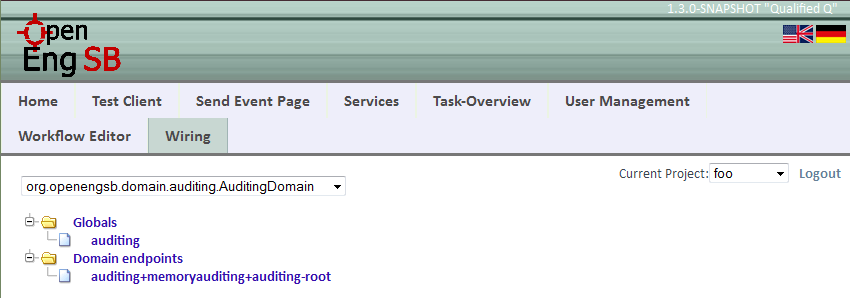
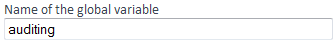
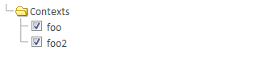
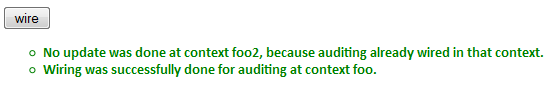

Chapter 27. Wiring
This user interface constitutes a way for administrators to do wiring. Wiring is a process, where global variables get connected with connectors (domain endpoints) in a certain context. As there are several steps to do that, this page gives you a fast and easy managing possibility. For further reading, please visit http://www.openengsb.org/nightly/docbook/developer.context.html.
27.1. Wire a global variable with a service
-
Select a domain-type in the drop-down-field. Doing that, all domain endpoints and all globals of this domain-type will be loaded. If nothing appears, then there will be probably no suitable global available and no suitable connector is instantiated. This can be checked on the Testclient page.
Selecting a domain in the drop-down-field lets globals and endpoints appear
-
You have to choose a global, because that is the object you want to get wired with a connector. A global variable is part of a rule allowing the workflow service to communicate with connectors and other objects. More information you can find in the Chapter about Workflows.
There are two possibilities to specify a global. Either you select one from the list or you write autonomous a name of a global in the corresponding text field. If the global doesn't exist, there will be a new one created with the type of the selected domain. If a global already exists and have another type as selected, then there will be an error message after submitting.
Input field for the global variable
-
You must select a domain endpoint from the corresponding list. The list will be loaded after you have selected a domain.

Input field for the service Id, which can be edited by selecting an endpoint from the list
-
You must select the contexts, where the wiring shall happen. You can select all but at least one have to be selected. Information about what a context means can be found at the Context Management.
List of all available contexts
-
After submitting the form, a success message for each context should appear. If an error occurs, an error message will be shown.
Screenshot of the wiring results
27.2. What wiring does in the background
The properties of the service will be updated. First, it will try to get the property with the key 'location.' + context from these properties, because there are all locations stored. If there is no such property, a new one will be added. After that, it will insert a new location in that property, which is the name of the given global. As there can be more locations, the new one will be appended excepted such location already exists. Then nothing will be changed, but an info message will appear.
| Prev | Home | Next |
| Chapter 26. Testclient | OpenEngSB Community | Part VI. OpenEngSB Available Domains & Connectors |